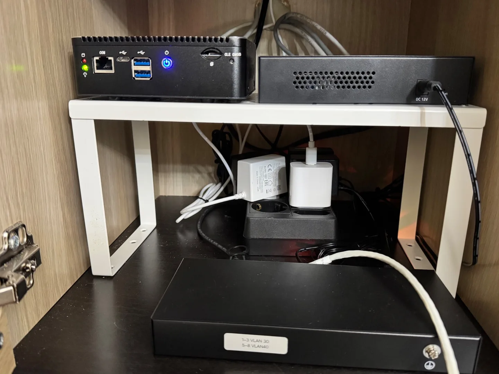
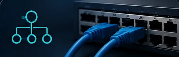
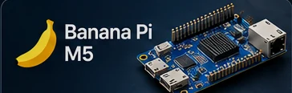
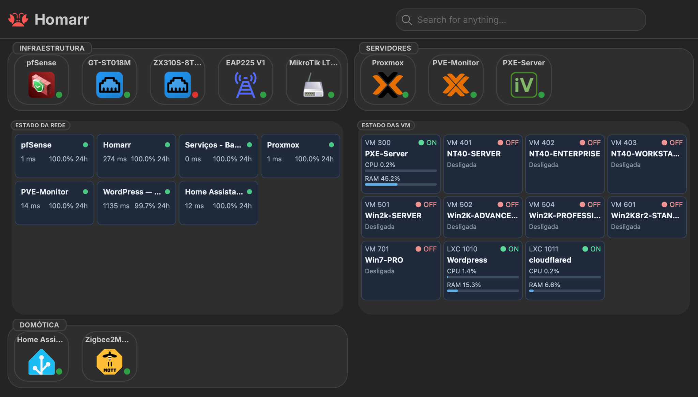
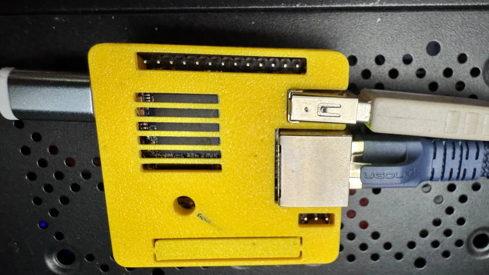
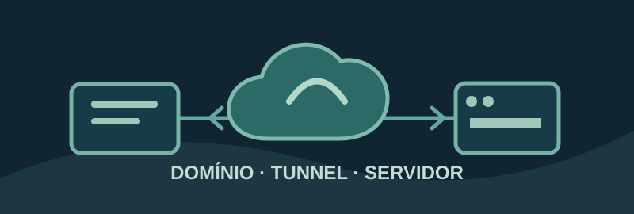

De 1996 a 2009.
Um mapa de experiências de sistemas operativos: o que arrancou, o que falhou e o que ainda está em testes.
Uma biblioteca técnica, organizada por temas.
Projetos, testes e apontamentos reunidos por área: infraestrutura, laboratório, automação e interesses pessoais. Cada tema tem a sua página, sem misturar a Wiki com o CV.

Home Lab: uma rede para experimentar
Firewall, switches geríveis, VLANs, servidores Proxmox e automação num ambiente de testes que continua a evoluir.
Conhecer o projeto →Explorar os projetos.
12 projetos
Instalado e testado nas funções descritas.
Instalado ou parcialmente validado; há testes pendentes.
Há funcionalidades ou casos de teste que não funcionaram como esperado.
Ideia ou tecnologia por instalar e documentar.

Home Lab
Visão global da infraestrutura e dos serviços.
Explorar →Funcional
Redes e VLANs
Segmentação, firewall, switches e Wi‑Fi.
Explorar →FuncionalpfSense e failover
Gateways, continuidade de ligação e comutação automática da fibra para LTE.
Explorar →FuncionalProxmox
Virtualização, containers, armazenamento e backups.
Explorar →Funcional
Banana Pi M5
Um pequeno servidor para monitorização, automação e gestão da rede.
Explorar →FuncionalHome Assistant
Automação, sensores, MQTT e Zigbee.
Explorar →Funcional
Homarr
Painel de acesso aos serviços e organização.
Explorar →Em testes
Monitorização
Verificação de serviços, alertas e continuidade.
Explorar →Laboratório — índice de temas
Windows NT e 2000, arranque PXE/iVentoy e FOG Project. Escolhe o tema que queres explorar.
Ver temas do laboratório →
Cloudflare e alojamento local
Domínios, DNS e WordPress em servidor próprio, sem depender de alojamento tradicional.
Explorar →InfraestruturaAcesso remotoTailscale — acesso remoto
Rede privada entre dispositivos e acesso remoto ao laboratório sem expor diretamente os serviços à internet.
Explorar →Como ler esta Wiki
O que vais encontrar
- Explicações simples sobre o objetivo de cada projeto e as tecnologias utilizadas.
- Capturas de ecrã e diagramas acompanhados de contexto.
- Exemplos documentados, problemas encontrados e soluções adotadas.
- Outros artigos serão adicionados à medida que forem documentados.